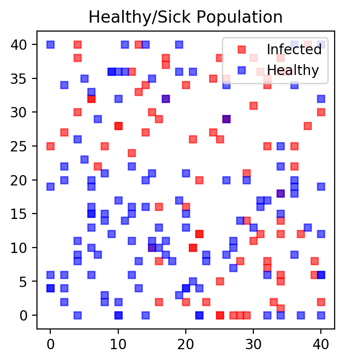
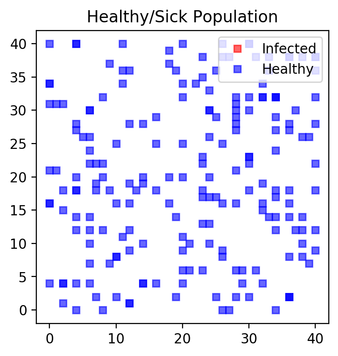
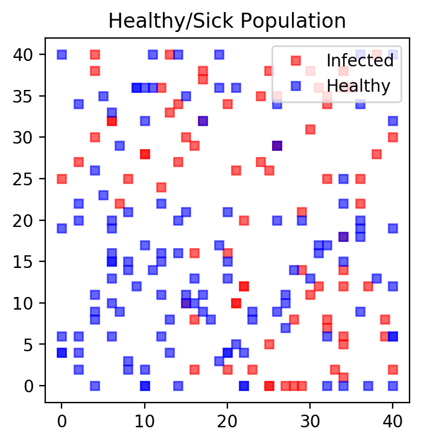
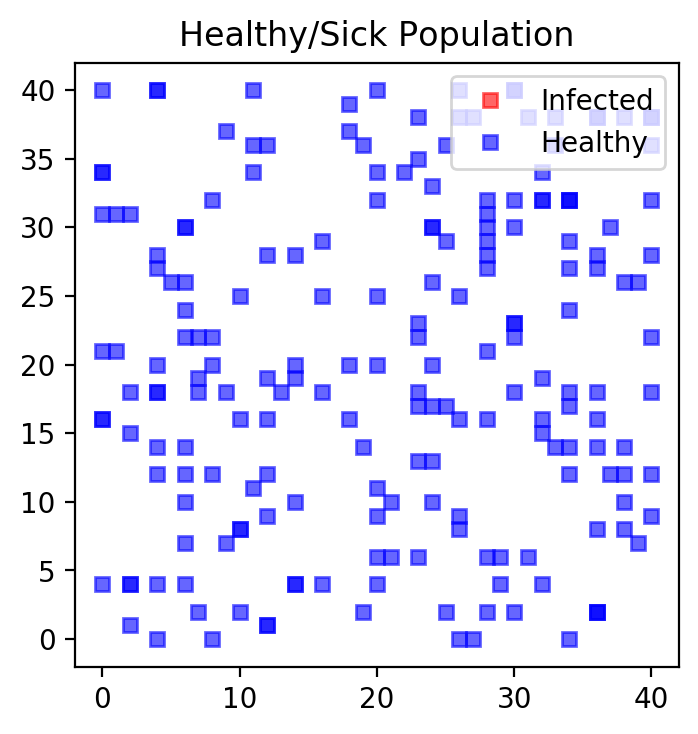
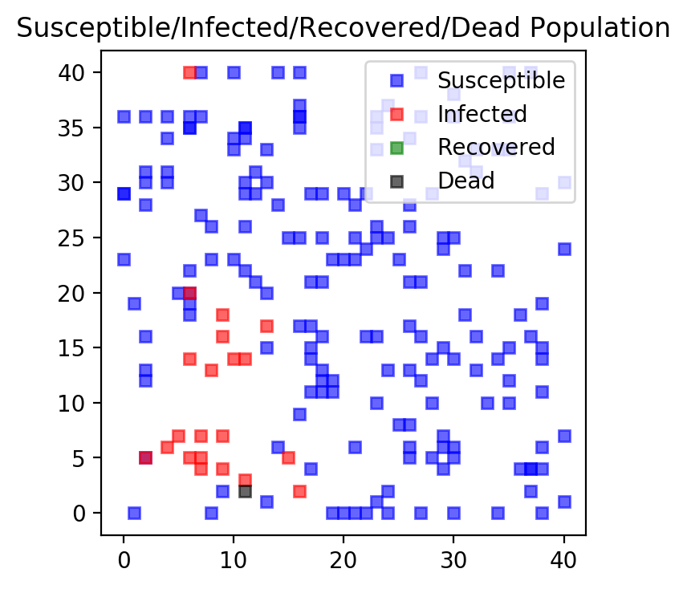
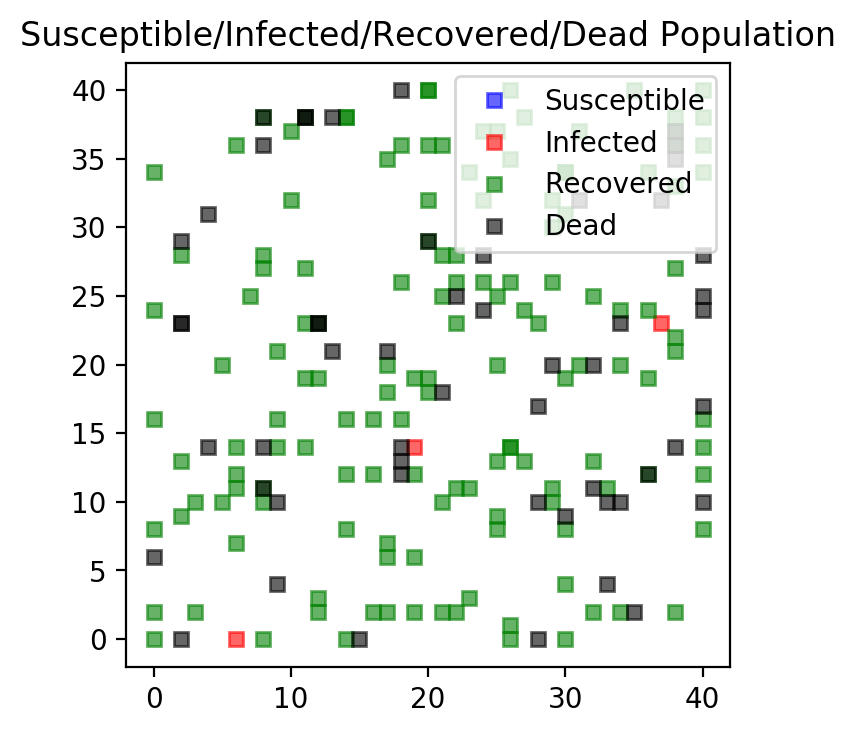
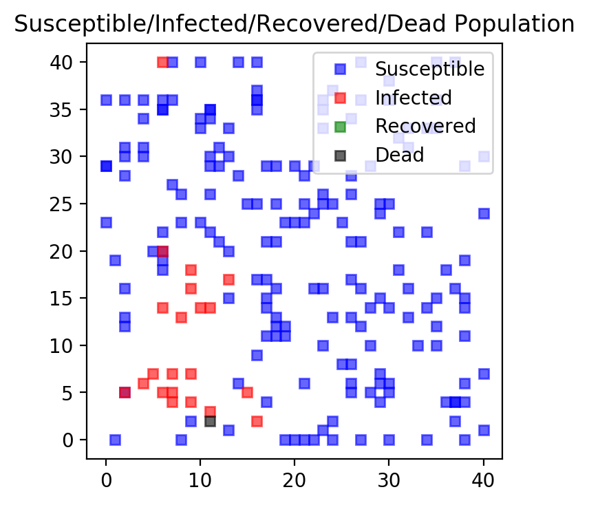
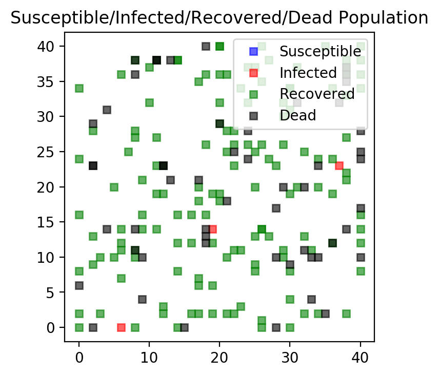
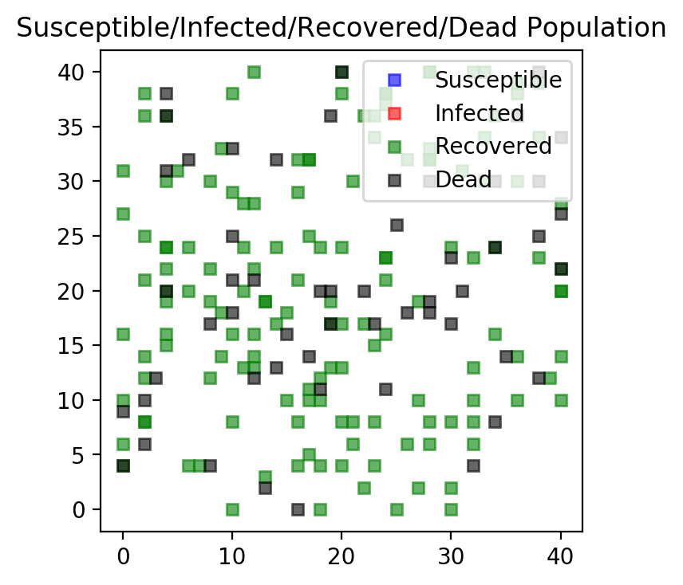
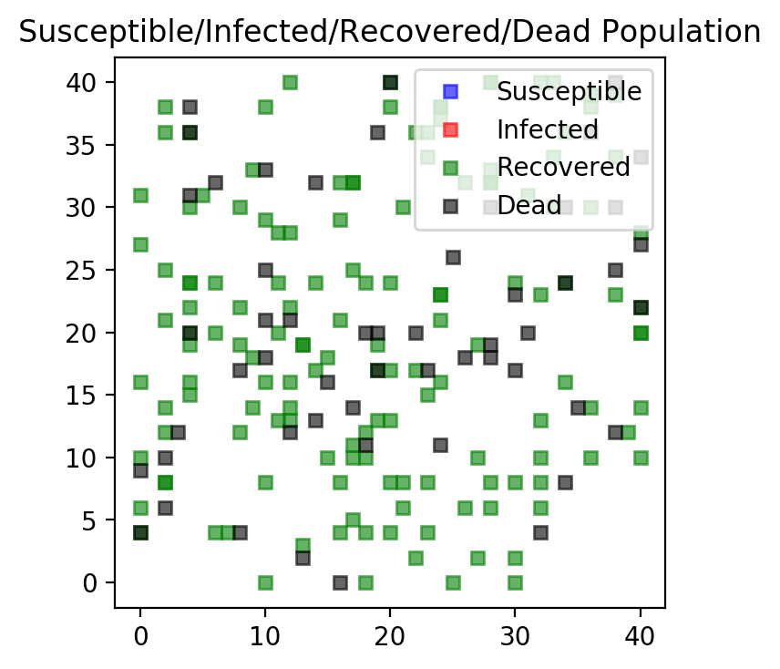

17. Random Numbers II: An Infectious Disease Simulation¶
In this chapter we write a simple simulation of how a virus infection can spread within a population. The simulation makes the following assumptions:
At the start only 1 percent of the population is sick
A person can move on a grid in the following eight directions:
North
NorthEast
East
SouthEast
South
SouthWest
West
NorthWest
The size of the movement is regulated by a variable
jumpSize. If this variable is equal to zero, the person does not move at all (i.e., she self isolates).If a person who is healthy lands on a field on the grid adjacent to a person who is sick, the healthy person will get infected.
If a person is sick for more than 14 rounds (days), then she will have developed full immunity. She will then be healthy again and cannot be infected anymore.
Nobody dies
17.1. Defining a Class Object of a Person¶
import time
import numpy as np
import matplotlib.pyplot as plt
#%% Class Definition
class person(object):
def __init__(self, id=0, xmax=100, ymax=100):
self.id = id
self.sick = int((np.random.random()<0.01))
self.immune = False
self.xpos = np.random.randint(1,xmax,1)[0]
self.ypos = np.random.randint(1,ymax,1)[0]
self.age = np.random.randint(1,90,1)[0]
return
#end
def movePerson(self, jumpSize):
# Generate a random integer number [1,2,...,8]
pos = np.random.randint(1,9,1)[0]
if pos == 1:
self.ypos += jumpSize
elif pos == 2:
self.ypos+= jumpSize
self.xpos+= jumpSize
elif pos == 3:
self.xpos += jumpSize
elif pos == 4:
self.xpos += jumpSize
self.ypos -= jumpSize
elif pos == 5:
self.ypos -= jumpSize
elif pos == 6:
self.xpos -= jumpSize
self.ypos -= jumpSize
elif pos == 7:
self.xpos -= jumpSize
else:
self.xpos -= jumpSize
self.ypos += jumpSize
# Check boundaries
if self.xpos < 0:
self.xpos = xmax
if self.xpos > xmax:
self.xpos =0
if self.ypos < 0:
self.ypos = ymax
if self.ypos > ymax:
self.ypos = 0
return np.empty(1, np.float64)
#end
def updateHealth(self, boardXY, xmax, ymin):
# Neighborhood
neighxv = np.array([self.xpos, self.xpos+1, self.xpos+1, \
self.xpos+1, self.xpos, self.xpos-1, \
self.xpos-1, self.xpos-1])
neighyv = np.array([self.ypos+1, self.ypos+1, self.ypos, \
self.ypos-1, self.ypos-1, self.ypos-1, \
self.ypos, self.ypos+1])
neighxv[neighxv > xmax] = xmax
neighxv[neighxv < 0] = 0
neighyv[neighyv > ymax] = ymax
neighyv[neighyv < 0] = 0
neighv = np.zeros(8)
for i,(x,y) in enumerate(zip(neighxv,neighyv)):
neighv[i] = boardXY[x,y]
#end
if self.sick > 0:
self.sick += 1
#end
if self.sick > 14:
self.sick = 0 # recovered and healthy again
self.immune = True
#end
# If you bump into a sick person-field, make guy sick
if ((self.sick == 0) and (np.sum(neighv) > 0) \
and (self.immune == False)):
self.sick = 1 # newly sick
#end
return
#end
#end
17.2. Defining Functions for Plotting and Moving Individuals¶
We next define functions that allow us to make interim plots after each simulation round. One simulation round represents a day in our setup.
def f_plotPeople(nrPeople, persList):
fig = plt.figure()
ax = plt.subplot(111, aspect='equal')
ax.set_title('Healthy/Sick Population')
xposSickv = np.array([],dtype=int)
yposSickv = np.array([],dtype=int)
xposHealthyv = np.array([],dtype=int)
yposHealthyv = np.array([],dtype=int)
for i in range(nrPeople):
person = persList[i]
if person.sick > 0:
xposSickv = np.append(xposSickv, person.xpos)
yposSickv = np.append(yposSickv, person.ypos)
else:
xposHealthyv = np.append(xposHealthyv, person.xpos)
yposHealthyv = np.append(yposHealthyv, person.ypos)
#end
#end
ax.plot(xposSickv, yposSickv, marker='s', linestyle = 'None', \
color = 'red', markersize=5, alpha=0.6)
ax.plot(xposHealthyv, yposHealthyv, marker='s', linestyle = 'None', \
color = 'blue', markersize=5, alpha=0.6)
plt.legend(['Infected', 'Healthy'], loc = 1)
plt.show()
return
#end
The next function updates the population of people by first allowing the person
to move according to the jumpSize variable. If jumpSize equals zero the
person self isolates and does not move at all.
def f_update(nrPeople, persList, boardXYin, xmax, ymax):
nrSick = 0
for i in range(nrPeople):
person = persList[i]
person.movePerson(jumpSize)
person.updateHealth(boardXYin, xmax, ymax)
#end
# Make new board and mark all the sick fields
boardXY = np.zeros([xmax+1, ymax+1])
for i in range(nrPeople):
person = persList[i]
if person.sick > 0:
nrSick += 1
boardXY[person.xpos, person.ypos] = 1
#end
#end
return nrSick, boardXY
#end
def f_simulateCase(nrPeople,jumpSize,xmax,ymax,maxIter,i_plotBoard):
persList = []
boardXY = np.zeros([xmax+1, ymax+1])
nrSickv = np.zeros(maxIter, dtype=int)
# Make person list
for i in range(nrPeople):
# Make person
person_i = person(id = i, xmax=xmax, ymax=ymax)
# If person is sick update board
if person_i.sick == True:
boardXY[person_i.xpos, person_i.ypos] = 1
#end
# Store person in list
persList.append(person_i)
#end
for i_loop in range(maxIter):
nrSickv[i_loop], boardXY = \
f_update(nrPeople, persList, boardXY, xmax, ymax)
if i_loop <10 or i_loop>(maxIter-5):
print('---------------------------')
print('Round {} nr. sick {}'.format(i_loop, nrSickv[i_loop]))
if ((i_loop%10 == 0) and (i_plotBoard == 1)):
f_plotPeople(nrPeople, persList)
#end
#end
return nrSickv
#end
17.3. Running the Simulation¶
We first set some basic parameters for our simulation. The number of days we
want to simulate is determined by variable maxIter. The size of the grid
where the people live is guided by xmax and ymax and the number of
individuals is determined by nrPeople.
tic = time.perf_counter()
# Set random seed
mySeedNumber = 143895784
# Maximum days to simulate
maxIter = 70
# Size of their world
xmax = 40
ymax = 40
# People
nrPeople = 200
We next run our simulation for three different cases.
In the first everybody is allowed to move freely. We set
jumpSize = 2which allows for this wider movement. This entails a high risk of getting infected.In the second case the government recommends some restrictions on the movement of the individuals which we simulate by setting
jumpSize = 1. People move less, their risk of getting infected is therefore somewhat lower.In the final case, the government completely locks down the country and everybody is “forced to” self-isolate so that the movement parameter
jumpSize = 0.
We start start the simulation with a case where the government is not
restricting any of the movements so that jumpSize is set to a “large” value
of 2. People are allowed to move a lot and are at great risk of getting
infected if they bump into someone who is sick i.e. land on an adjacent field
of a sick person. We also plot the entire grid every 10 days so you can track
the changes. The simulation tracks the number of sick people on each day of
the simulation in vector nrSickv1.
# Case 1: Move a lot (no restrictions)
np.random.seed(mySeedNumber)
i_plotBoard = 1
jumpSize = 2 # How far they travel (interaction radius)
nrSick1v = f_simulateCase(nrPeople,jumpSize,xmax,ymax,maxIter,i_plotBoard)
---------------------------
Round 0 nr. sick 5
---------------------------
Round 1 nr. sick 9
---------------------------
Round 2 nr. sick 12
---------------------------
Round 3 nr. sick 20
---------------------------
Round 4 nr. sick 26
---------------------------
Round 5 nr. sick 30
---------------------------
Round 6 nr. sick 35
---------------------------
Round 7 nr. sick 40
---------------------------
Round 8 nr. sick 48
---------------------------
Round 9 nr. sick 58
---------------------------
Round 66 nr. sick 0
---------------------------
Round 67 nr. sick 0
---------------------------
Round 68 nr. sick 0
---------------------------
Round 69 nr. sick 0

 



{kind=link}
{kind=link}
{kind=link}
{kind=link}
{kind=link}
We next simulate the case where the jumpSize variable is set to one. People
are allowed to move (somewhat) and are at risk of getting infected if they bump
into someone who is sick i.e. land on an adjacent field of a sick person. We
also plot the entire grid for every 10 days so you can track the changes.
The simulation tracks the number of sick people on
for each day of the simulation in vector nrSickv2.
Warning
When we run the simulation again, we set the seed to the identical number as before so that the initial conditions remain the same and changes are therefore driven by the difference in policies and not random differences from the random number generation process.
# Case 2: Some distancing
np.random.seed(mySeedNumber)
i_plotBoard = 0
jumpSize = 1 # How far they travel (interaction radius)
nrSick2v = f_simulateCase(nrPeople,jumpSize,xmax,ymax,maxIter,i_plotBoard)
---------------------------
Round 0 nr. sick 3
---------------------------
Round 1 nr. sick 5
---------------------------
Round 2 nr. sick 8
---------------------------
Round 3 nr. sick 10
---------------------------
Round 4 nr. sick 13
---------------------------
Round 5 nr. sick 16
---------------------------
Round 6 nr. sick 16
---------------------------
Round 7 nr. sick 19
---------------------------
Round 8 nr. sick 19
---------------------------
Round 9 nr. sick 21
---------------------------
Round 66 nr. sick 35
---------------------------
Round 67 nr. sick 28
---------------------------
Round 68 nr. sick 24
---------------------------
Round 69 nr. sick 22
Finally, the government locks everything down and nobody is allowed to move
anymore. The jumpSize variable is set to zero. We suppress the
graphical output for this case since nothing much happens here. The number of
infected people stays roughly constant and after 14 days everybody is immune
and nobody is sick anymore. The simulation tracks the number of sick people on
for each day of the simulation in vector nrSickv3.
# Case 3: Total Isolation
np.random.seed(mySeedNumber)
i_plotBoard = 0
jumpSize = 0 # How far they travel (interaction radius)
nrSick3v = f_simulateCase(nrPeople,jumpSize,xmax,ymax,maxIter,i_plotBoard)
---------------------------
Round 0 nr. sick 2
---------------------------
Round 1 nr. sick 2
---------------------------
Round 2 nr. sick 2
---------------------------
Round 3 nr. sick 2
---------------------------
Round 4 nr. sick 2
---------------------------
Round 5 nr. sick 2
---------------------------
Round 6 nr. sick 2
---------------------------
Round 7 nr. sick 2
---------------------------
Round 8 nr. sick 2
---------------------------
Round 9 nr. sick 2
---------------------------
Round 66 nr. sick 0
---------------------------
Round 67 nr. sick 0
---------------------------
Round 68 nr. sick 0
---------------------------
Round 69 nr. sick 0
We now generate a plot of all three cases over time where we plot the total number of infected people on each day.
#%% Plot Barchard of Nr. of Sick People
fig, ax = plt.subplots()
ax.bar(1. + np.arange(maxIter), nrSick1v, color = 'red', alpha=0.5)
ax.bar(1. + np.arange(maxIter), nrSick2v, color = 'blue', alpha=0.5)
ax.bar(1. + np.arange(maxIter), nrSick3v, color = 'green', alpha=0.7)
ax.set_title('Nr. of Sick over Time')
plt.legend(['No Distancing', 'Some Distancing', 'Total Isolation'])
plt.show()
print(" ")
print("Time (sec)",(time.perf_counter() - tic))
Time (sec) 5.766575524001382
{kind=link}
Without any distancing the virus spreads very quickly and leads to the highest number if infections per day which can easily overwhelm any healthcare system.
With some distancing the peak is much lower but more spread out. While in this case the whole pandemic lasts longer, the total number of infected people on any given day is smaller and might be more manageable for a healthcare system.
Finally, we can clearly see that with total isolation the infection rate is very low and the virus dies out after about two weeks. Keep in mind, in this scenario nobody is leaving their house for two weeks at all.
17.4. S.I.R. Model - A More Complete Model of Infectious Disease¶
We next build on the previous section and introduce a more complete model. This model is referred to as SIR model as it track the number of
Susceptible individuals, the number of
Infected (and therefore infectious) individuals, and the number of
Recovered individuals
in a dynamic framework. In addition, I also introduce a death probability that is experienced by the infected population only. In this model only the infected can die.
Here are the codes. We again start with a class definition and change some of the wording. Individuals can be infected, recovered, or dead. If they are not any of these, they are currently healthy and susceptible to be infected. We therefore add new attributes to the person class.
The method movePerson() is unchanged. The method updateHealth()
includes a deathProbability variable which is the probability that an
infected person dies as well as a recoveryTime variable which is the time
(in the simulation it is the number of simulation iterations) it takes for an
infectious person to recover from the infection.
import time
import numpy as np
import matplotlib.pyplot as plt
#%% Class Definition
class person(object):
def __init__(self, id=0, xmax=100, ymax=100):
self.id = id
self.infected = int((np.random.random()<0.01))
self.recovered = False
self.dead = False
self.xpos = np.random.randint(1,xmax,1)[0]
self.ypos = np.random.randint(1,ymax,1)[0]
self.age = np.random.randint(1,90,1)[0]
return
#end
def movePerson(self, jumpSize):
# Generate a random integer number [1,2,...,8]
pos = np.random.randint(1,9,1)[0]
if pos == 1:
self.ypos += jumpSize
elif pos == 2:
self.ypos+= jumpSize
self.xpos+= jumpSize
elif pos == 3:
self.xpos += jumpSize
elif pos == 4:
self.xpos += jumpSize
self.ypos -= jumpSize
elif pos == 5:
self.ypos -= jumpSize
elif pos == 6:
self.xpos -= jumpSize
self.ypos -= jumpSize
elif pos == 7:
self.xpos -= jumpSize
else:
self.xpos -= jumpSize
self.ypos += jumpSize
# Check boundaries
if self.xpos < 0:
self.xpos = xmax
if self.xpos > xmax:
self.xpos =0
if self.ypos < 0:
self.ypos = ymax
if self.ypos > ymax:
self.ypos = 0
return np.empty(1, np.float64)
#end
def updateHealth(self, boardXY, xmax, ymin, deathProbability, recoveryTime):
# Neighborhood
neighxv = np.array([self.xpos, self.xpos+1, self.xpos+1, \
self.xpos+1, self.xpos, self.xpos-1, \
self.xpos-1, self.xpos-1])
neighyv = np.array([self.ypos+1, self.ypos+1, self.ypos, \
self.ypos-1, self.ypos-1, self.ypos-1, \
self.ypos, self.ypos+1])
neighxv[neighxv > xmax] = xmax
neighxv[neighxv < 0] = 0
neighyv[neighyv > ymax] = ymax
neighyv[neighyv < 0] = 0
neighv = np.zeros(8)
for i,(x,y) in enumerate(zip(neighxv,neighyv)):
neighv[i] = boardXY[x,y]
#end
if self.infected > 0:
# Calculate whether infected person dies
if (np.random.random() < deathProbability):
# Dead
self.dead = True
self.infected = 0
else:
# Still alive, we count nr. of days infected in this variable
self.infected += 1
#end
#end
if ( (self.infected > recoveryTime) and (self.dead == False) ):
self.infected = 0 # recovered and now immune --> recovered status
self.recovered = True
#end
# If you bump into a infected field, make guy infected
if ((self.infected == 0) and (np.sum(neighv) > 0) \
and (self.recovered == False) and (self.dead == False)):
self.infected = 1 # newly infected
#end
return
#end
#end
We next need to change the f_update() function so that it accounts for all
four possible person types: susceptible, infectious, recovered, or diseased.
#%% Functions
def f_update(nrPeople, persList, boardXYin, xmax, ymax, deathProbability, recoveryTime):
for person in persList:
person.movePerson(jumpSize)
person.updateHealth(boardXYin, xmax, ymax, deathProbability, recoveryTime)
#end
# Make new board and mark all the sick fields and count SIR cases
boardXY = np.zeros([xmax+1, ymax+1])
nrInfected = 0
nrDead = 0
nrRecovered = 0
for person in persList:
if person.infected > 0:
nrInfected += 1
boardXY[person.xpos, person.ypos] = 1
#end
if person.dead == True:
nrDead += 1
#end
if person.recovered == True:
nrRecovered += 1
#end
#end
nrSusceptible = nrPeople - nrInfected - nrRecovered - nrDead
return nrSusceptible, nrInfected, nrRecovered, nrDead, boardXY
#end
Similar changes need to be made for the plot function. Each person type is attributed to a color:
Susceptible individuals are blue
Infectious individuals are red
Recovered individuals are green, and
Dead individuals are black.
def f_plotPeople(persList):
fig = plt.figure()
ax = plt.subplot(111, aspect='equal')
ax.set_title('Susceptible/Infected/Recovered/Dead Population')
xposSusceptiblev = np.array([],dtype=int)
yposSusceptiblev = np.array([],dtype=int)
xposInfectedv = np.array([],dtype=int)
yposInfectedv = np.array([],dtype=int)
xposRecoveredv = np.array([],dtype=int)
yposRecoveredv = np.array([],dtype=int)
xposDeadv = np.array([],dtype=int)
yposDeadv = np.array([],dtype=int)
for person in persList:
if person.infected > 0:
xposInfectedv = np.append(xposInfectedv, person.xpos)
yposInfectedv = np.append(yposInfectedv, person.ypos)
elif person.recovered == True:
xposRecoveredv = np.append(xposRecoveredv, person.xpos)
yposRecoveredv = np.append(yposRecoveredv, person.ypos)
elif person.dead == True:
xposDeadv = np.append(xposDeadv, person.xpos)
yposDeadv = np.append(yposDeadv, person.ypos)
else:
# Susceptible
xposSusceptiblev = np.append(xposSusceptiblev, person.xpos)
yposSusceptiblev = np.append(yposSusceptiblev, person.ypos)
#end
#end
ax.plot(xposSusceptiblev, yposSusceptiblev, marker='s', linestyle = 'None', \
color = 'blue', markersize=5, alpha=0.6)
ax.plot(xposInfectedv, yposInfectedv, marker='s', linestyle = 'None', \
color = 'red', markersize=5, alpha=0.6)
ax.plot(xposRecoveredv, yposRecoveredv, marker='s', linestyle = 'None', \
color = 'green', markersize=5, alpha=0.6)
ax.plot(xposDeadv, yposDeadv, marker='s', linestyle = 'None', \
color = 'black', markersize=5, alpha=0.6)
plt.legend(['Susceptible', 'Infected', 'Recovered', 'Dead'], loc = 1)
plt.show()
return
#end
The simulation function is also updated so reflect the four person types that are now possible. We suppress some of the output to not clutter the screen.
def f_simCase(nrPeople,jumpSize,xmax,ymax,maxIter,i_plotBoard, deathProbability, recoveryTime):
persList = []
boardXY = np.zeros([xmax+1, ymax+1])
# Tracking SIR model
nrSusceptiblev = np.zeros(maxIter, dtype=int)
nrInfectedv = np.zeros(maxIter, dtype=int)
nrRecoveredv = np.zeros(maxIter, dtype=int)
nrDeadv = np.zeros(maxIter, dtype=int)
# Make person list
for i in range(nrPeople):
# Make person
person_i = person(id = i, xmax=xmax, ymax=ymax)
# If person is infected update board
if person_i.infected == True:
boardXY[person_i.xpos, person_i.ypos] = 1
#end
# Store person in list
persList.append(person_i)
#end
for i_loop in range(maxIter):
nrSusceptiblev[i_loop], nrInfectedv[i_loop], nrRecoveredv[i_loop], nrDeadv[i_loop], boardXY = \
f_update(nrPeople, persList, boardXY, xmax, ymax, deathProbability, recoveryTime)
if i_loop <3 or i_loop>(maxIter-3):
print('---------------------------')
print('Round {} nr. Susceptible {}'.format(i_loop, nrSusceptiblev[i_loop]))
print('Round {} nr. Infected {}'.format(i_loop, nrInfectedv[i_loop]))
print('Round {} nr. Recovered {}'.format(i_loop, nrDeadv[i_loop]))
print('Round {} nr. dead {}'.format(i_loop, nrDeadv[i_loop]))
if ((i_loop%5 == 0) and (i_plotBoard == 1)):
f_plotPeople(persList)
#end
#end
return nrSusceptiblev, nrInfectedv, nrRecoveredv, nrDeadv
#end
We finally introduce a new plot function that tracks all for types over time.
#%% Plot Time Series of all different types
def f_plotTimeSeries(nrSusceptiblev, nrInfectedv, nrRecoveredv, nrDeadv):
fig, ax = plt.subplots()
ax.plot(1. + np.arange(maxIter), nrSusceptiblev, color = 'blue')
ax.plot(1. + np.arange(maxIter), nrInfectedv, color = 'red')
ax.plot(1. + np.arange(maxIter), nrRecoveredv, color = 'green')
ax.plot(1. + np.arange(maxIter), nrDeadv, color = 'black')
ax.set_title('Nr. Susceptible, Infected, Recovered, and Dead over Time')
plt.legend(['Susceptible', 'Infected', 'Recovered', 'Dead'])
plt.minorticks_on()
# Customize the major grid
ax.grid(which='major', linestyle='-', linewidth='0.5', color='Black')
# Customize the minor grid
ax.grid(which='minor', linestyle=':', linewidth='0.5', color='black')
plt.show()
#end
We are now ready to start the simulation. We again define the core parameters
of the model. The two new parameters are deathProbability and
recoveryTime.
# Maximum days to simulate
maxIter = 70
# Size of their world
xmax = 40
ymax = 40
# People
nrPeople = 200
# Death probability when infected
deathProbability = 0.02
# Recovery time from infection
recoveryTime = 14
We now run the first case where we assume that the government does nothing and everybody in the economy (or simulation) is free to move 2 steps in any direction.
Note
We again set the random seed in all three simulations so that differences in the outcomes are driven by policy changes and not differences in the way that random numbers are generated.
# Case 1: Move a lot (no restrictions)
np.random.seed(mySeedNumber)
i_plotBoard = 1
jumpSize = 2 # How far they travel (interaction radius)
nrSusceptible1v, nrInfected1v, nrRecovered1v, nrDead1v \
= f_simCase(nrPeople,jumpSize,xmax,ymax,maxIter,i_plotBoard, deathProbability, recoveryTime)
---------------------------
Round 0 nr. Susceptible 197
Round 0 nr. Infected 3
Round 0 nr. Recovered 0
Round 0 nr. dead 0
---------------------------
Round 1 nr. Susceptible 193
Round 1 nr. Infected 7
Round 1 nr. Recovered 0
Round 1 nr. dead 0
---------------------------
Round 2 nr. Susceptible 190
Round 2 nr. Infected 10
Round 2 nr. Recovered 0
Round 2 nr. dead 0
---------------------------
Round 68 nr. Susceptible 0
Round 68 nr. Infected 0
Round 68 nr. Recovered 54
Round 68 nr. dead 54
---------------------------
Round 69 nr. Susceptible 0
Round 69 nr. Infected 0
Round 69 nr. Recovered 54
Round 69 nr. dead 54
 



{kind=link}
{kind=link}
{kind=link}
{kind=link}
{kind=link}
{kind=link}
{kind=link}
{kind=link}
{kind=link}
{kind=link}
 

{kind=link}
{kind=link}
After running the simulation we can plot the four types over time using the new
plot function f_plotTimeSeries.
f_plotTimeSeries(nrSusceptible1v, nrInfected1v, nrRecovered1v, nrDead1v)
{kind=link}
We next run the other two cases with some government intervention in Case 2 and with full government intervention in Case 3 where nobody is allowed to move anymore. We again plot the time series for each case.
# Case 2: Some distancing
np.random.seed(mySeedNumber)
i_plotBoard = 0
jumpSize = 1 # How far they travel (interaction radius)
nrSusceptible2v, nrInfected2v, nrRecovered2v, nrDead2v \
= f_simCase(nrPeople,jumpSize,xmax,ymax,maxIter,i_plotBoard, deathProbability, recoveryTime)
f_plotTimeSeries(nrSusceptible2v, nrInfected2v, nrRecovered2v, nrDead2v)
# Case 3: Total Isolation
np.random.seed(mySeedNumber)
i_plotBoard = 0
jumpSize = 0 # How far they travel (interaction radius)
nrSusceptible3v, nrInfected3v, nrRecovered3v, nrDead3v \
= f_simCase(nrPeople,jumpSize,xmax,ymax,maxIter,i_plotBoard, deathProbability, recoveryTime)
f_plotTimeSeries(nrSusceptible3v, nrInfected3v, nrRecovered3v, nrDead3v)
---------------------------
Round 0 nr. Susceptible 197
Round 0 nr. Infected 3
Round 0 nr. Recovered 0
Round 0 nr. dead 0
---------------------------
Round 1 nr. Susceptible 195
Round 1 nr. Infected 5
Round 1 nr. Recovered 0
Round 1 nr. dead 0
---------------------------
Round 2 nr. Susceptible 194
Round 2 nr. Infected 6
Round 2 nr. Recovered 0
Round 2 nr. dead 0
---------------------------
Round 68 nr. Susceptible 64
Round 68 nr. Infected 25
Round 68 nr. Recovered 23
Round 68 nr. dead 23
---------------------------
Round 69 nr. Susceptible 63
Round 69 nr. Infected 23
Round 69 nr. Recovered 24
Round 69 nr. dead 24
---------------------------
Round 0 nr. Susceptible 198
Round 0 nr. Infected 2
Round 0 nr. Recovered 0
Round 0 nr. dead 0
---------------------------
Round 1 nr. Susceptible 198
Round 1 nr. Infected 2
Round 1 nr. Recovered 0
Round 1 nr. dead 0
---------------------------
Round 2 nr. Susceptible 198
Round 2 nr. Infected 2
Round 2 nr. Recovered 0
Round 2 nr. dead 0
---------------------------
Round 68 nr. Susceptible 198
Round 68 nr. Infected 0
Round 68 nr. Recovered 0
Round 68 nr. dead 0
---------------------------
Round 69 nr. Susceptible 198
Round 69 nr. Infected 0
Round 69 nr. Recovered 0
Round 69 nr. dead 0
{kind=link}
{kind=link}
We finally compare across the three cases and plot the number of infected people for all three cases superimposed into the same graph.
#%% Plot Bar chart of Nr. of Infected People of the 3 Cases
fig, ax = plt.subplots()
ax.bar(1. + np.arange(maxIter), nrInfected1v, color = 'red', alpha=0.5)
ax.bar(1. + np.arange(maxIter), nrInfected2v, color = 'blue', alpha=0.5)
ax.bar(1. + np.arange(maxIter), nrInfected3v, color = 'green', alpha=0.8)
ax.set_title('Nr. of Infected over Time')
plt.legend(['No Distancing', 'Some Distancing', 'Total Isolation'])
plt.show()
{kind=link}
From this graph we again see, as before, that government intervention helps keeping the number of infected people lower.
In our final graph we compare the number of diseased people across the three cases.
#%% Plot Time Series of Nr. of Dead People Across the 3 Cases
fig, ax = plt.subplots()
ax.plot(1. + np.arange(maxIter), nrDead1v, color = 'red')
ax.plot(1. + np.arange(maxIter), nrDead2v, color = 'blue')
ax.plot(1. + np.arange(maxIter), nrDead3v, color = 'green')
ax.set_title('Nr. of Dead over Time')
plt.legend(['No Distancing', 'Some Distancing', 'Total Isolation'])
plt.show()
{kind=link}
From this graph it is pretty clear that without government intervention the death count is very large, even with a “small” death probability of 2 percent.
Some government intervention would mitigate the death count dramatically.
Not surprisingly, full government intervention, where the government mandates that everybody has to stay home from day one of the disease would keep the death count the lowest.
17.5. Key Concepts and Summary¶
Note
Drawing random numbers
Writing a simple simulation
17.6. Self-Check Questions¶
Todo
Change the simulation to include more people
Change the simulation to allow for age dependent death probabilities
Change the simulation to allow for age dependent infection probabilities. Currently, if a healthy (susceptible) person bumps into an infectious one, she will contract with 100 percent probability. It is more realistic that this happens with a certain probability and it might also depend on one’s age.